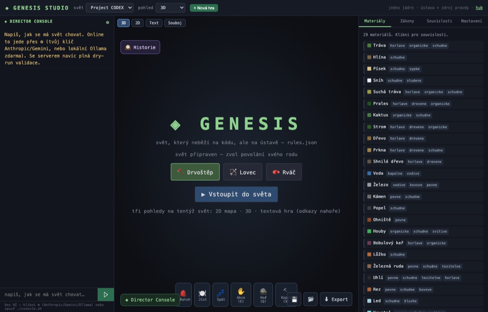
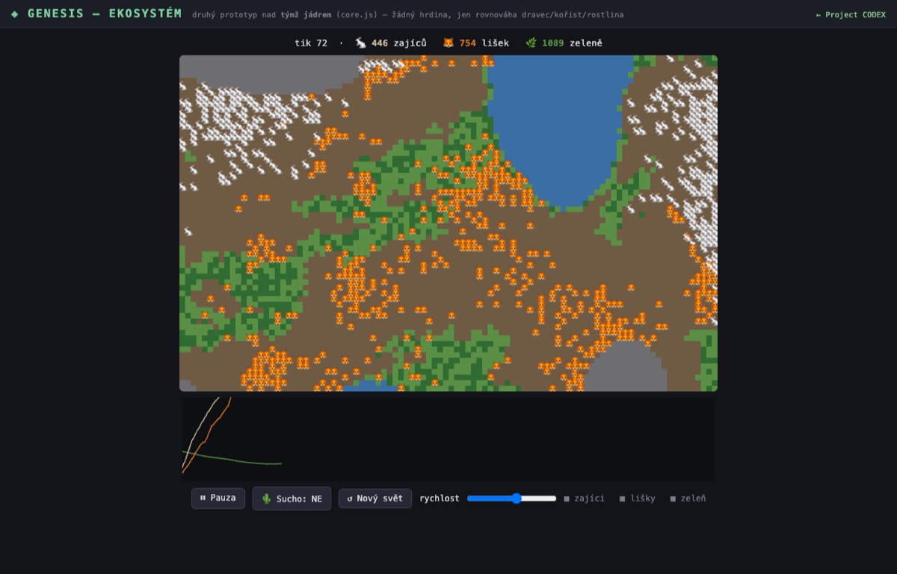
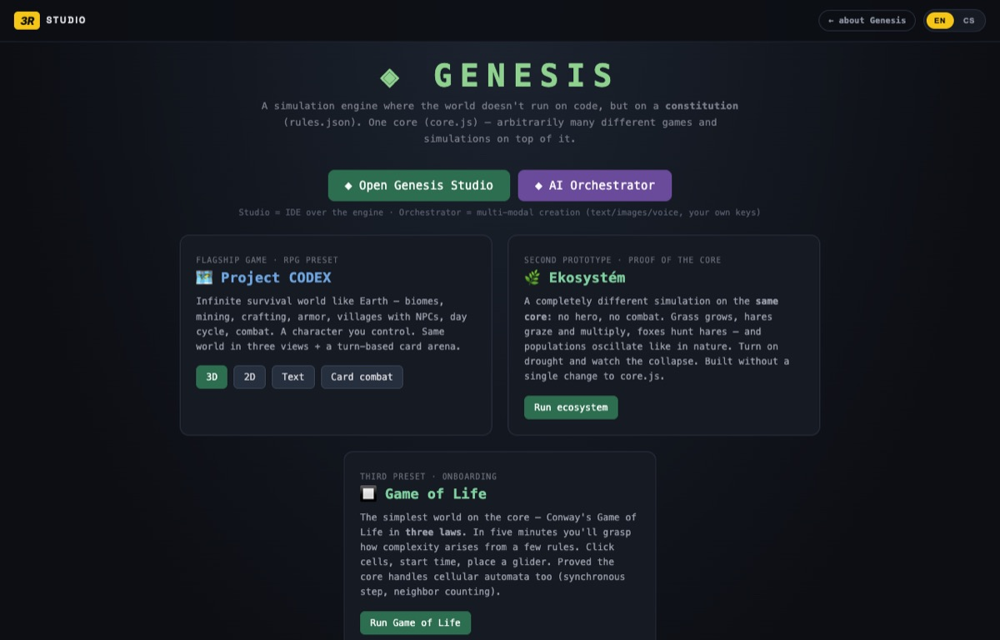
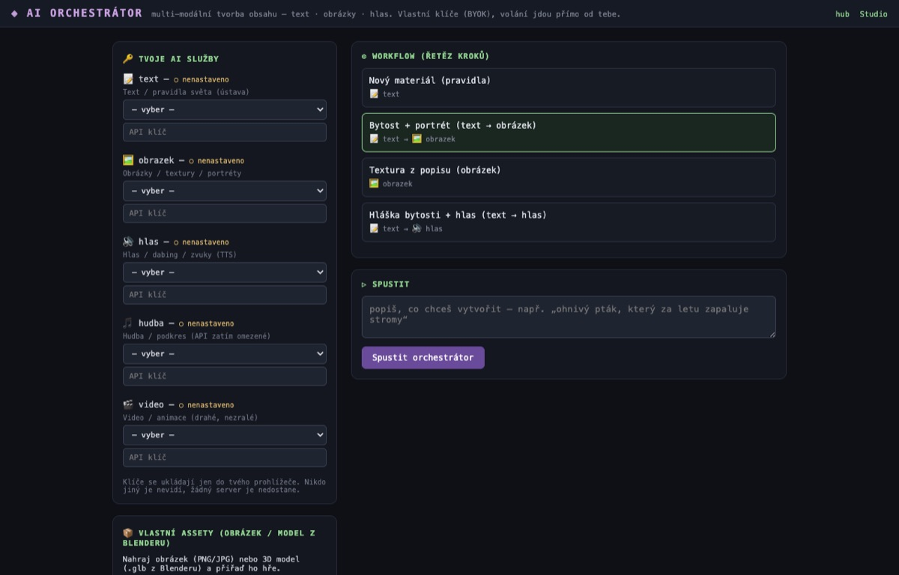

Vize · Creative Tech R&DVision · Creative Tech R&D
◈ GENESIS
Simulační engine, kde svět neběží na kódu, ale na ústavě. Místo tisíců řádků kódu popíšeš zákony světa v jediném čitelném souboru — a jedno jádro je vykoná. Voda vede proud, železo ve vlhku koroduje, oheň se šíří. Nic není napevno; složité situace vznikají ze srážky pár pravidel.
A simulation engine where the world doesn't run on code, but on a constitution. Instead of thousands of lines of code, you describe the laws of the world in one readable file — and a single core executes them. Water conducts current, iron corrodes when wet, fire spreads. Nothing is hard-coded; complex situations emerge from a few rules colliding.
Vize a interní R&D 3R Studia. Není to hotový produkt — je to směr, který zkoumáme: svět jako čitelná ústava, ne kód. Funkční prototyp běží interně; níže pár náhledů.
A vision & internal R&D by 3R Studio. Not a finished product — it's the direction we're exploring: the world as a readable constitution, not code. A working prototype runs internally; a few glimpses below.
Náhledy z prototypu
Prototype glimpses

Genesis Studio — IDE: AI konzole, živý náhled, inspektor materiálů a zákonů.Genesis Studio — the IDE: AI console, live preview, inspector of materials & laws.

Ekosystém — dravci a kořist v rovnováze, populace samy oscilují.Ecosystem — predators and prey in balance, populations oscillate on their own.

Jedno jádro, více světů — CODEX, ekosystém, Game of Life.One core, many worlds — CODEX, ecosystem, Game of Life.

Multi-modální AI orchestrátor — text, obrázky, hlas s vlastními klíči.Multi-modal AI orchestrator — text, images, voice with your own keys.
Čím se liší
What makes it different
🧬 Ústava, ne kódConstitution, not code
Celý svět je jeden soubor materiálů, vlastností a zákonů. Změň ho a svět se změní — i za běhu, i větou přes AI konzoli.The whole world is one file of materials, properties and laws. Change it and the world changes — even at runtime, by a plain sentence via the AI console.
🔗 Kauzální grafCausal graph
Nejen co se stalo, ale proč — „jelen uhořel ← oheň se šířil ← blesk z bouřky". Řetěz, jaký běžný engine neukáže.Not just what happened, but why — “deer burned ← fire spread ← lightning”. A chain no ordinary engine shows.
🕰 Cestování časemTime travel
Přehraj svět zpět a podívej se na něj před požárem. Deterministicky reprodukovatelné.Rewind the world and see it before the fire. Deterministically reproducible.
🎨 Multi-modální AIMulti-modal AI
Generuj pravidla, obrázky, hlas — s vlastními klíči (Claude/GPT/Gemini/…). Vše běží u tebe, žádný cizí server.Generate rules, images, voice — with your own keys (Claude/GPT/Gemini/…). Runs on your side, no one else's server.
Co prototyp zkouší
What the prototype explores
🗺️ Project CODEX — survival RPGProject CODEX — survival RPG
🌿 Ekosystém — rovnováha dravec/kořistEcosystem — predator/prey balance
🔲 Game of Life
Vize, ne slib. Genesis je otevřený výzkum 3R Studia — zkoumáme, jak daleko jde popsat živý svět jako ústavu místo kódu. Kde pomáhá AI, běží na vlastních klíčích, nikdy ne přes cizí server. Náhledy výše jsou z interního prototypu.
A vision, not a promise. Genesis is open R&D by 3R Studio — exploring how far a living world can be described as a constitution instead of code. Where AI helps, it runs on your own keys, never someone else's server. The glimpses above are from an internal prototype.